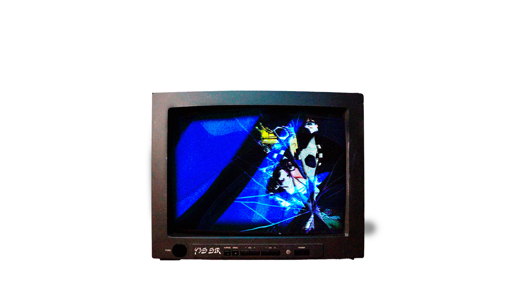
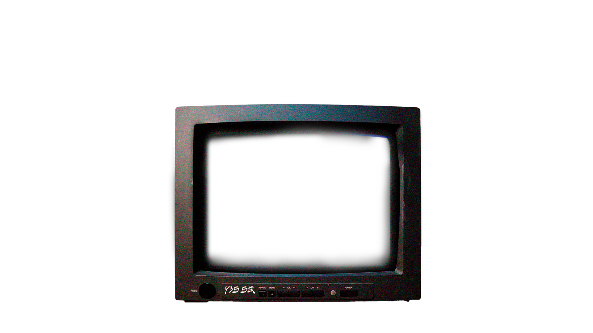

Pasá, chusmeá mis proyectos y encontrá lo que te guste.


Pela Tipazo
El Pela Tipazo me recuerda que la luz siempre encuentra dónde quedarse. Su calva reluciente no es ausencia: es un faro que ilumina el camino de quienes todavía buscan respuestas. Y en sus anteojos se refleja una sabiduría tan profunda que hasta el universo baja la voz para escucharlo.